Next: Output
Up: Spatial Density
Previous: Theory and implementation
Contents
Parameters
Pressing the Spatial Density button will pop up the dialog shown on figure 4.60
Figure 4.60:
The dialog from where the SD analysis will be set up and run.
|
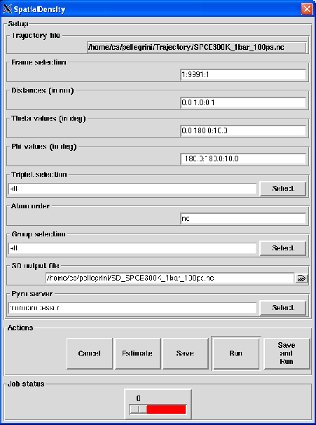
|
The following input fields controls the parameters for the SD analysis:
- Trajectory file
Format: string
Default: traj_file where traj_file is the name of the loaded trajectory
Description: the value of this widget can not be changed. It just recalls for information purpose the name
of the trajectory file loaded for the analysis.
- Frame selection
Format: string
Default: 1:traj_length:1 where traj_length is the number of frames of the trajectory.
Description: this widget allows to select the trajectory frames that will be used for the analysis. This must
be a string of the form:
first:last:step
where first is an integer specifying the first frame number to consider, last is an integer specifying the last
frame number to consider and step is an integer specifying the step number between two frames.
For example,
- 2:10:3 will select the frames 2, 5 and 8.
- 1:5:1 will select the frames 1, 2, 3, 4 and 5.
- Distances (in nm)
Format: string
Default: 0.0:1.0:0.1.
Description: this widget allows to select distances in nm at which the CN will be computed. This must
be a string of the form:
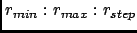
In this way, the CN will be calculated for discrete r defined as
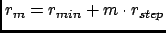 where 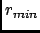 is the smallest r , 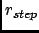 is the
distance between two consecutive r values and with m running from 0 to 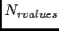
where is the number of selected r values defined as
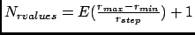 where 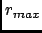 is the
radius of the biggest r value .
For example,
- 0:10:1 will compute PDF for r = 0, 1, 2, 3, 4, 5, 6, 7, 8, 9, 10 nm.
- 3:7:1.2 will compute PDF for r = 3, 4.2, 5.4, 6.6 nm.
- Theta values (in deg)
Format: string
Default: 0.0:180.0:10.0.
Description: this widget allows to select the spherical  angle in 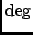 at which the SD will be computed.
This must be a string of the form:
angle in 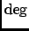 at which the SD will be computed.
This must be a string of the form:
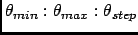
In this way, the SD will be calculated for discrete values defined as
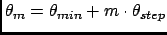 where 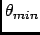 is the minimum value, 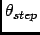 is
the step between two consecutive values and with m running from 0 to 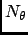
where is the number of selected values defined as
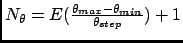 where 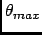 is the
maximum value.
- Phi values (in deg)
Format: string
Default: -180.0:180.0:10.0.
Description: this widget allows to select the spherical 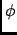 angle in at which the SD will be computed.
This must be a string of the form:
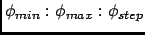
In this way, the SD will be calculated for discrete values defined as
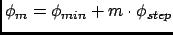 where 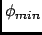 is the minimum value, 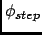 is
the step between two consecutive values and with m running from 0 to 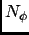
where is the number of selected values defined as
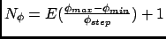 where 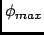 is the
maximum value.
- Triplet selection
Format: group selection string
Default: all
Description: this widget allows the selection of the triplets of atoms from which the analysis will be
performed. See Section 4.2.2.3 for more details about this kind of selection. Any selection that does not
contain exactly three atoms will be discarded.
- Atom order
Format: string
Default: no
Description: this widget allows to specify the order in which the atoms a1, a2 and a3 should be
ordered. By default, the order will be defined by nMOLDYN by ranking for the atoms of each triplet by their
MMTK name. Otherwise, the entered value must have the following specific format:
MMTK name for a1,MMTK name for a2,MMTK name for a3
- Group selection
Format: group selection string
Default: all
Description: this widget allows the selection of the group of atoms to consider in the analysis
(see Section 4.2.6.3). See Section 4.2.2.3 for more details about group selection.
- SD output file
Format: string
Default: SD_traj_file.nc where traj_file.nc is the name of the input trajectory
Description: this widget allows to enter the name of the NetCDF output file of the SD analysis. A CDL
version of the NetCDF output file is also automatically created with SD_traj_file.cdl name.
Next: Output
Up: Spatial Density
Previous: Theory and implementation
Contents
pellegrini eric
2009-10-06